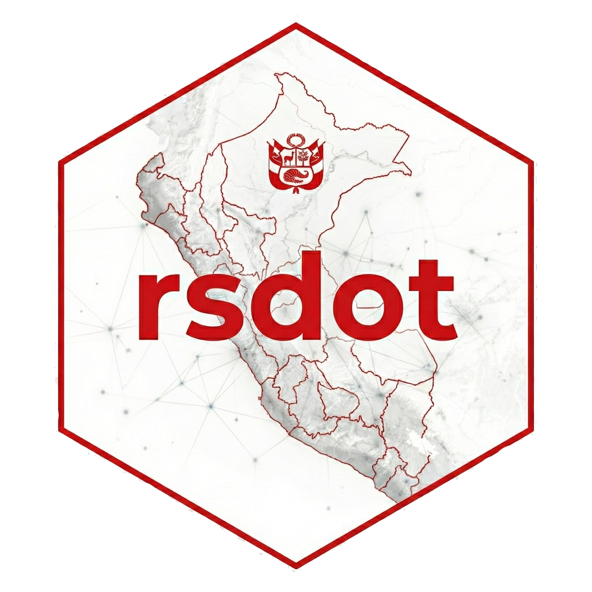
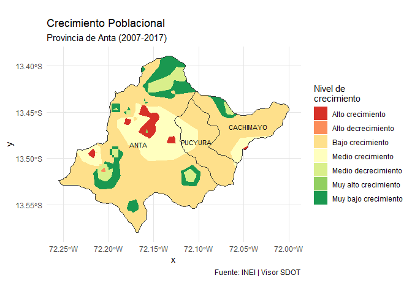
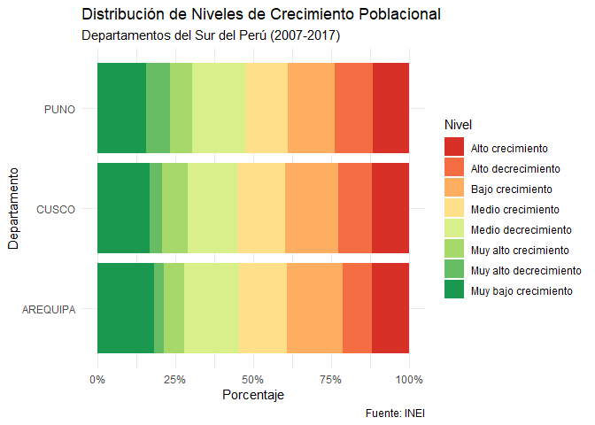

rsdot 
rsdot proporciona acceso programático a la información geográfica producida y recopilada por la Secretaría de Demarcación y Organización Territorial (SDOT) de la Presidencia del Consejo de Ministros (PCM) del Perú.
El paquete facilita el acceso y manipulación de diversas capas vectoriales, incluyendo:
- Límites censales INEI 2023: Departamentos, provincias y distritos
- Tiempos de desplazamiento: Accesibilidad territorial a capitales departamentales
- Densidad y crecimiento poblacional: Interpolación espacial de censos 2007-2017
- Información del modelo geográfico SDOT: Infraestructura, centros poblados, riesgos y peligros
- Otras capas temáticas territoriales
⚠️ Importante
Los límites censales del INEI provistos por este paquete son referenciales y no constituyen límites oficiales ni tienen efecto legal demarcatorio.
✨ Características
- ✅ Acceso programático a datos espaciales oficiales del Perú
- ✅ Descarga automática desde OSF con caché inteligente
- ✅ Compatible con
sf,ggplot2,dplyry herramientas SIG modernas - ✅ Validación de geometrías automática para operaciones espaciales
📦 Funciones principales
-
get_departamentos()- Límites censales departamentales -
get_provincias()- Límites censales provinciales -
get_distritos()- Límites censales distritales -
get_tiempos_desplazamiento()- Tiempos de desplazamiento a capitales -
get_densidad_poblacional()- Densidad y crecimiento poblacional intercensal
📦 Instalación
Instalar la versión de desarrollo desde GitHub:
# Usando remotes
install.packages("remotes")
remotes::install_github("PaulESantos/rsdot")
# O usando pak (recomendado)
install.packages("pak")
pak::pak("PaulESantos/rsdot")🚀 Ejemplos de uso
Cargar el paquete
library(rsdot)
library(sf)
#> Linking to GEOS 3.13.1, GDAL 3.10.2, PROJ 9.5.1; sf_use_s2() is TRUE
library(ggplot2)
library(dplyr)
#>
#> Adjuntando el paquete: 'dplyr'
#> The following objects are masked from 'package:stats':
#>
#> filter, lag
#> The following objects are masked from 'package:base':
#>
#> intersect, setdiff, setequal, union1. Límites censales
Obtener departamentos
deps <- get_departamentos()
#> Descargando: Límites Censales Departamentales (INEI 2023)...
#> Fuente: OSF - Repositorio DEMARCA
#> ✓ Descarga completada
#> Descomprimiendo archivos...
#> Cargando geometrías...
#> ✓ Datos cargados: 25 departamentos
deps
#> Simple feature collection with 25 features and 7 fields
#> Geometry type: MULTIPOLYGON
#> Dimension: XY
#> Bounding box: xmin: -81.32823 ymin: -18.35093 xmax: -68.65228 ymax: -0.03860597
#> Geodetic CRS: WGS 84
#> # A tibble: 25 × 8
#> gid iddpto nombdep capital tipo_norma numero fecha
#> <int> <chr> <chr> <chr> <chr> <chr> <date>
#> 1 1 01 AMAZONAS CHACHAPOYAS LEY S/N 1832-11-21
#> 2 2 02 ANCASH HUARAZ LEY S/N 1851-11-05
#> 3 3 03 APURIMAC ABANCAY LEY S/N 1873-04-28
#> 4 4 04 AREQUIPA AREQUIPA REGLAMENTO S/N 1822-04-26
#> 5 5 05 AYACUCHO AYACUCHO REGLAMENTO S/N 1822-04-26
#> 6 6 06 CAJAMARCA CAJAMARCA LEY S/N 1857-01-02
#> 7 7 07 CALLAO CALLAO <NA> <NA> NA
#> 8 8 08 CUSCO CUSCO REGLAMENTO S/N 1822-04-26
#> 9 9 09 HUANCAVELICA HUANCAVELICA LEY S/N 1857-01-02
#> 10 10 10 HUANUCO HUANUCO LEY S/N 1869-01-24
#> # ℹ 15 more rows
#> # ℹ 1 more variable: geometry <MULTIPOLYGON [°]>
# Visualización básica
ggplot(deps) +
geom_sf(fill = "steelblue", color = "white") +
theme_minimal() +
labs(
title = "Departamentos del Perú",
caption = "Fuente: SDOT - PCM / INEI 2023"
)
Obtener provincias de un departamento
cusco_prov <- get_provincias(departamento = "CUSCO")
#> Descargando: Límites Censales Provinciales (INEI 2023)...
#> Fuente: OSF - Repositorio DEMARCA
#> ✓ Descarga completada
#> Descomprimiendo archivos...
#> Cargando geometrías...
#> ✓ Filtrado por departamento: 13 provincia(s) en CUSCO
#> ✓ Datos cargados: 13 provincia(s)
head(cusco_prov)
#> Simple feature collection with 6 features and 9 fields
#> Geometry type: MULTIPOLYGON
#> Dimension: XY
#> Bounding box: xmin: -72.77286 ymin: -14.88788 xmax: -70.78982 ymax: -12.50659
#> Geodetic CRS: WGS 84
#> # A tibble: 6 × 10
#> gid iddpto nombdep idprov nombprov capital tipo_norma numero fecha
#> <int> <chr> <chr> <chr> <chr> <chr> <chr> <chr> <date>
#> 1 3 08 CUSCO 0802 ACOMAYO ACOMAYO Ley S/N 1861-02-23
#> 2 9 08 CUSCO 0803 ANTA ANTA Ley S/N 1839-11-19
#> 3 28 08 CUSCO 0804 CALCA CALCA Reglament… S/N 1825-06-21
#> 4 31 08 CUSCO 0805 CANAS YANAOCA Ley S/N 1833-10-14
#> 5 32 08 CUSCO 0806 CANCHIS SICUANI Ley S/N 1833-10-14
#> 6 54 08 CUSCO 0807 CHUMBIVILCAS SANTO T… Reglament… S/N 1825-06-21
#> # ℹ 1 more variable: geometry <MULTIPOLYGON [°]>
# Mapa de provincias
ggplot(cusco_prov) +
geom_sf(aes(fill = nombprov), color = "white", linewidth = 0.3) +
scale_fill_viridis_d(option = "plasma") +
theme_minimal() +
labs(
title = "Provincias del Departamento de Cusco",
subtitle = "INEI 2023 | Referencial",
fill = "Provincia"
)
Obtener distritos
Ejemplo: Cañete (Lima)
canete <- get_distritos(
provincia = "CAÑETE",
departamento = "LIMA"
)
#> Descargando: Límites Censales Distritales (INEI 2023)...
#> Fuente: OSF - Repositorio DEMARCA
#> Nota: Este es un archivo grande, puede tardar varios minutos...
#> ✓ Descarga completada
#> Descomprimiendo archivos...
#> Cargando geometrías distritales...
#> ✓ Filtrado por departamento: 171 distrito(s) en LIMA
#> ✓ Filtrado por provincia: 16 distrito(s) en CAÑETE
#> ✓ Filtrado completado por departamento > provincia: 16 distrito(s)
# Visualización
ggplot(canete) +
geom_sf(aes(fill = nombdist), color = "white", linewidth = 0.3) +
scale_fill_viridis_d() +
theme_minimal() +
labs(
title = "Distritos de la Provincia de Cañete",
subtitle = "Referencia Censal INEI 2023",
fill = "Distrito"
)
2. Tiempos de desplazamiento
# Cargar límites de Cusco
cusco <- get_departamentos(departamento = "CUSCO")
# Obtener tiempos de desplazamiento
tiempos_cusco <- get_tiempos_desplazamiento(area_interes = cusco)
# Visualizar accesibilidad territorial
ggplot() +
geom_sf(data = tiempos_cusco, aes(fill = cat_tiempo), color = NA) +
geom_sf(data = cusco, fill = NA, color = "black", linewidth = 1) +
scale_fill_brewer(palette = "YlOrRd", name = "Tiempo", direction = -1) +
labs(
title = "Tiempo de Desplazamiento a Capital más Cercana",
subtitle = "Departamento de Cusco",
caption = "Fuente: INEI - MTC | Visor - SDOT"
) +
theme_void()3. Densidad y crecimiento poblacional
Ver departamentos disponibles
# Listar departamentos con datos disponibles
get_densidad_poblacional()
#> Departamentos disponibles:
#> - AMAZONAS
#> - ANCASH
#> - APURIMAC
#> - AREQUIPA
#> - AYACUCHO
#> - CAJAMARCA
#> - CALLAO
#> - CUSCO
#> - HUANCAVELICA
#> - HUANUCO
#> - ICA
#> - JUNIN
#> - LA LIBERTAD
#> - LAMBAYEQUE
#> - LIMA
#> - LORETO
#> - MADRE DE DIOS
#> - MOQUEGUA
#> - PASCO
#> - PIURA
#> - PUNO
#> - SAN MARTIN
#> - TACNA
#> - TUMBES
#> - UCAYALI
#>
#> Uso: get_densidad_poblacional(departamento = 'CUSCO')Cargar datos de un departamento
densidad_cusco <- get_densidad_poblacional(departamento = "CUSCO")
#> Descargando: CUSCO...
#> ✓ Descarga completada: CUSCO
#> Cargando datos: CUSCO...
#> Validando geometrías...
#> ✓ Cargado: CUSCO (649 registros)
#> ✓ Datos cargados exitosamente: 649 registros
densidad_cusco
#> Simple feature collection with 649 features and 11 fields
#> Geometry type: MULTIPOLYGON
#> Dimension: XY
#> Bounding box: xmin: -73.9811 ymin: -15.45829 xmax: -70.34507 ymax: -11.21229
#> Geodetic CRS: WGS 84
#> # A tibble: 649 × 12
#> ubigeo nombdep nombprov nombdist capital nivel rango descrip shape_leng
#> * <chr> <chr> <chr> <chr> <chr> <chr> <chr> <chr> <dbl>
#> 1 080703 CUSCO CHUMBIVILCAS CHAMACA CHAMACA Muy … <= -… Tasa m… 0.0302
#> 2 080707 CUSCO CHUMBIVILCAS QUIÑOTA QUIÑOTA Muy … <= -… Tasa m… 0.00842
#> 3 080202 CUSCO ACOMAYO ACOPIA ACOPIA Muy … <= -… Tasa m… 0.0154
#> 4 080701 CUSCO CHUMBIVILCAS SANTO TOM… SANTO … Muy … <= -… Tasa m… 0.118
#> 5 081002 CUSCO PARURO ACCHA ACCHA Muy … <= -… Tasa m… 0.0240
#> 6 080501 CUSCO CANAS YANAOCA YANAOCA Muy … <= -… Tasa m… 0.0302
#> 7 080506 CUSCO CANAS PAMPAMARCA PAMPAM… Muy … <= -… Tasa m… 0.00743
#> 8 080601 CUSCO CANCHIS SICUANI SICUANI Muy … <= -… Tasa m… 0.0347
#> 9 081207 CUSCO QUISPICANCHI HUARO HUARO Muy … <= -… Tasa m… 0.0232
#> 10 080806 CUSCO ESPINAR PICHIGUA PICHIG… Muy … <= -… Tasa m… 0.0273
#> # ℹ 639 more rows
#> # ℹ 3 more variables: shape_area <dbl>, geom <MULTIPOLYGON [°]>,
#> # departamento <chr>
# Mapa de nivel de crecimiento
ggplot(densidad_cusco) +
geom_sf(aes(fill = nivel), color = NA) +
scale_fill_brewer(
palette = "RdYlGn",
name = "Nivel de\nCrecimiento"
) +
labs(
title = "Crecimiento Poblacional por Nivel",
subtitle = "Departamento de Cusco (2007-2017)",
caption = "Fuente: INEI | Visor - SDOT"
) +
theme_minimal()
Filtrado por provincia y distrito
# Cargar solo una provincia
densidad_prov_cusco <- get_densidad_poblacional(
departamento = "CUSCO",
provincia = "CUSCO"
)
#> ✓ Usando caché: CUSCO
#> Cargando datos: CUSCO...
#> Validando geometrías...
#> ✓ Cargado: CUSCO (649 registros)
#> ✓ Filtrado por provincia: 36 registros
#> ✓ Datos cargados exitosamente: 36 registros
# Cargar distrito específico
densidad_wanchaq <- get_densidad_poblacional(
departamento = "CUSCO",
provincia = "CUSCO",
distrito = "WANCHAQ"
)
#> ✓ Usando caché: CUSCO
#> Cargando datos: CUSCO...
#> Validando geometrías...
#> ✓ Cargado: CUSCO (649 registros)
#> ✓ Filtrado por provincia: 36 registros
#> ✓ Filtrado por distrito: 3 registros
#> ✓ Datos cargados exitosamente: 3 registrosAnálisis avanzado: Mapa con etiquetas de distritos
prov_anta <- get_densidad_poblacional(
departamento = "CUSCO",
provincia = "ANTA",
distrito = c("CACHIMAYO", "PUCYURA", "ANTA"))
#> ✓ Usando caché: CUSCO
#> Cargando datos: CUSCO...
#> Validando geometrías...
#> ✓ Cargado: CUSCO (649 registros)
#> ✓ Filtrado por provincia: 43 registros
#> ✓ Filtrado por distrito: 14 registros
#> ✓ Datos cargados exitosamente: 14 registros
distritos_anta <- prov_anta |>
group_by(ubigeo, nombdist) |>
summarise(.groups = "drop")
distritos_anta
#> Simple feature collection with 3 features and 2 fields
#> Geometry type: POLYGON
#> Dimension: XY
#> Bounding box: xmin: -72.25564 ymin: -13.58002 xmax: -72.00001 ymax: -13.38918
#> Geodetic CRS: WGS 84
#> # A tibble: 3 × 3
#> ubigeo nombdist geom
#> <chr> <chr> <POLYGON [°]>
#> 1 080301 ANTA ((-72.23544 -13.49333, -72.23555 -13.49369, -72.23601 -13.49…
#> 2 080303 CACHIMAYO ((-72.07001 -13.43834, -72.07265 -13.43639, -72.07554 -13.43…
#> 3 080308 PUCYURA ((-72.06076 -13.50311, -72.0618 -13.50156, -72.06236 -13.501…
# Calcular centroides para etiquetas
distritos_centroides <- st_point_on_surface(distritos_anta)
#> Warning: st_point_on_surface assumes attributes are constant over geometries
#> Warning in st_point_on_surface.sfc(st_geometry(x)): st_point_on_surface may not
#> give correct results for longitude/latitude data
# Mapa completo
ggplot() +
# 1. Celdas con el nivel de crecimiento
geom_sf(
data = prov_anta,
aes(fill = nivel),
color = NA
) +
# 2. Contorno de distritos
geom_sf(
data = distritos_anta,
fill = NA,
color = "grey20",
linewidth = 0.4
) +
# 3. Nombres de los distritos
geom_sf_text(
data = distritos_centroides,
aes(label = nombdist),
size = 3
) +
scale_fill_brewer(
palette = "RdYlGn",
name = "Nivel de\ncrecimiento"
) +
labs(
title = "Crecimiento Poblacional",
subtitle = "Provincia de Anta (2007-2017)",
caption = "Fuente: INEI | Visor SDOT"
) +
theme_minimal() +
theme(
legend.position = "right",
panel.grid.major = element_line(linewidth = 0.2, colour = "grey90")
)
#> Warning in st_point_on_surface.sfc(sf::st_zm(x)): st_point_on_surface may not
#> give correct results for longitude/latitude data
Cargar múltiples departamentos
# Cargar varios departamentos del sur
densidad_sur <- get_densidad_poblacional(
departamento = c("CUSCO", "PUNO", "AREQUIPA")
)
#> Descargando: AREQUIPA...
#> ✓ Descarga completada: AREQUIPA
#> Cargando datos: AREQUIPA...
#> Validando geometrías...
#> ✓ Cargado: AREQUIPA (516 registros)
#> ✓ Usando caché: CUSCO
#> Cargando datos: CUSCO...
#> Validando geometrías...
#> ✓ Cargado: CUSCO (649 registros)
#> Descargando: PUNO...
#> ✓ Descarga completada: PUNO
#> Cargando datos: PUNO...
#> Validando geometrías...
#> ✓ Cargado: PUNO (631 registros)
#> Combinando datos de múltiples departamentos...
#> ✓ Datos cargados exitosamente: 1796 registros
# Análisis estadístico por departamento
densidad_sur %>%
st_drop_geometry() %>%
count(nombdep, nivel) %>%
ggplot(aes(x = nombdep, y = n, fill = nivel)) +
geom_col(position = "fill") +
scale_y_continuous(labels = scales::percent) +
scale_fill_brewer(palette = "RdYlGn", name = "Nivel") +
labs(
title = "Distribución de Niveles de Crecimiento Poblacional",
subtitle = "Departamentos del Sur del Perú (2007-2017)",
x = "Departamento",
y = "Porcentaje",
caption = "Fuente: INEI"
) +
coord_flip() +
theme_minimal()
📊 Fuentes de datos
Los datos provistos por este paquete provienen de:
- SDOT-PCM - Secretaría de Demarcación y Organización Territorial
📚 Citación
Si utilizas este paquete en tus publicaciones, por favor cítalo como:
citation("rsdot")
#> To cite package 'rsdot' in publications use:
#>
#> Santos Andrade P (2025). _rsdot: Acceso Programático a Datos
#> Espaciales de la SDOT-PCM Perú_. R package version 0.1.0, commit
#> 24c8a524a71cfefcf5255671f14a2a23d6864ab6,
#> <https://github.com/PaulESantos/rsdot>.
#>
#> A BibTeX entry for LaTeX users is
#>
#> @Manual{,
#> title = {rsdot: Acceso Programático a Datos Espaciales de la SDOT-PCM Perú},
#> author = {Paul Efren {Santos Andrade}},
#> year = {2025},
#> note = {R package version 0.1.0, commit 24c8a524a71cfefcf5255671f14a2a23d6864ab6},
#> url = {https://github.com/PaulESantos/rsdot},
#> }